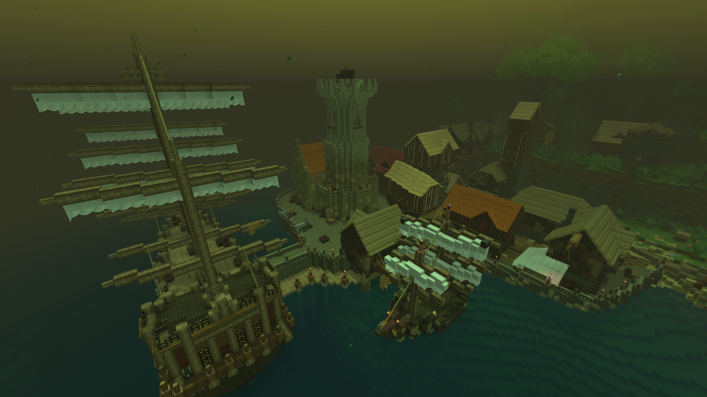
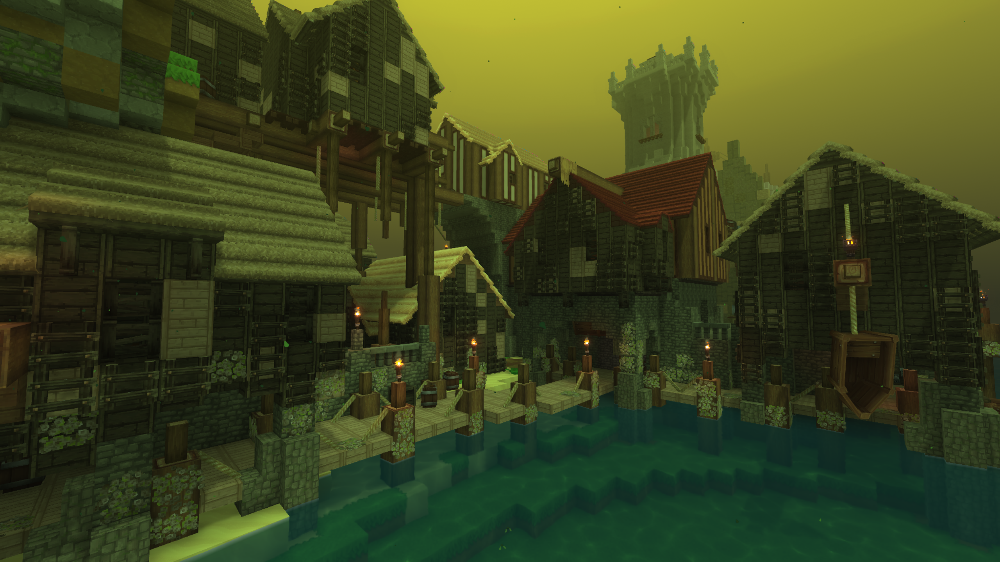
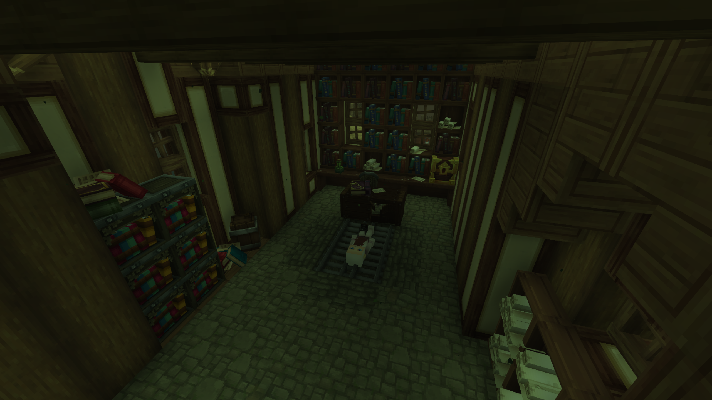
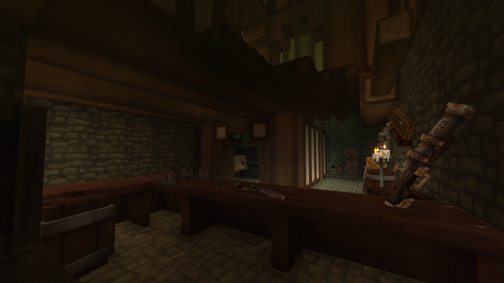
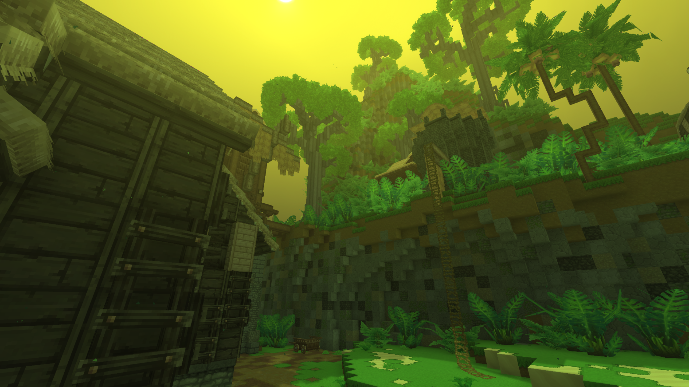

Tucked away beneath a heavy, mist-laden sky, Pirate's Cape stands as a chaotic haven for the lawless—a bustling medieval port town built on stolen wealth, shady deals, and the cold spray of the sea.
Pirate's Cape

| Location Information | |
|---|---|
| Coordinates | X: 617, Z: 787 |
| Area Type | Rural Ruins |
| Mob Threat | Very High |
| Bandit Threat | High |
| Number of Chests | 19 |
| Water Source | Yes |
| Clean Water Source | No |
| Fireplace | No |
| Chef's Stove | No |
| Workbench | No |
| Available Loot | ||
|---|---|---|
| 🍎 Food | ✗ | |
| 🥛 Civilian | Tier 1 | ✗ | |
| ✂️ Civilian | Tier 2 | ✗ | |
| 🛠️ Civilian | Tier 3 | 4 | |
| 🛡️ Military | Tier 1 | ✗ | |
| ⚔️ Military | Tier 2 | 4 | |
| 🏹 Military | Tier 3 | 11 | |
| 🌟 Legendary | ✗ | |
Lore
Tucked away beneath a heavy, mist-laden sky, Pirate's Cape stands as a chaotic haven for the lawless—a bustling medieval port town built on stolen wealth, shady deals, and the cold spray of the sea.
The Smuggler's Market
Situated strategically near the treacherous shores of Bandit Island, Pirate's Cape serves as the premier economic hub for the region's underworld. It is a fully functional, fortified medieval port town where traditional laws hold no sway. For years, this out-of-the-way cove was the primary destination where illicit trade happened on a massive scale—a place where black market goods, plundered cargo, and illegal weapons were bought, sold, and bartered away from the prying eyes of continental authorities.
The docks are constantly jammed with impressive wooden Galleons and agile raiding vessels, their massive white sails lowered just long enough to offload crates of booty or undergo hasty hull repairs before the next voyage.
Where Captains Convene
Pirate's Cape is more than just a trading post; it is a cultural melting pot for the worst the sea has to offer. On any given night, the town's dense, wood-paneled taverns and narrow alleys are alive with activity. Regular deckhands and cutthroats hang out alongside notorious, high-ranking ship captains to swap tall tales, plot upcoming maritime raids, and spend their ill-gotten coin on rum and dice.
A tall stone watchtower rises directly over the central pier, acting both as a lighthouse to guide friendly raiders through the murky coastal fog and as a defensive bastion to watch for rival fleets or encroaching patrols.
Anatomy of the Cape
- The main harbor piers, built wide and sturdy to accommodate heavy cargo transport and allow smooth docking for massive warships.
- The central stone watchtower, serving as the town's primary military vantage point and defensive anchor.
- A dense cluster of medieval gabled houses and warehouses, crowding the shoreline and holding generations of hidden contraband.
- The nearby waters of Bandit Island, providing a natural defensive buffer and an endless supply of allied outlaws.
Present Day
For survivalists exploring the coastlines, Pirate's Cape is a goldmine of naval gear and valuable commodities. While the town is inherently hostile and heavily guarded by protective factions of armed sailors and rogue captains, a successful infiltration yields incredible rewards. The warehouses lining the docks are packed with mid-to-high tier sailing equipment, firearms components, and rare foreign currencies that can be traded for specialized upgrades across the map.
Keep your hand on your coin purse and your back to the wall when navigating the docks of Pirate's Cape. Honor is a rare currency in this port town, but if you possess the right connections, there is no better place to turn a quick profit.
Gallery



